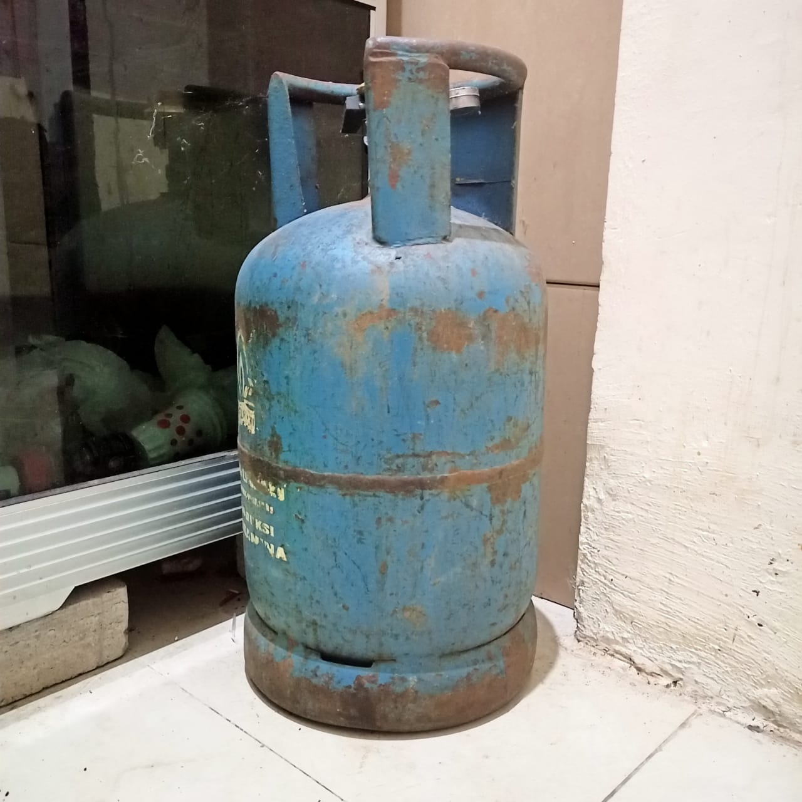
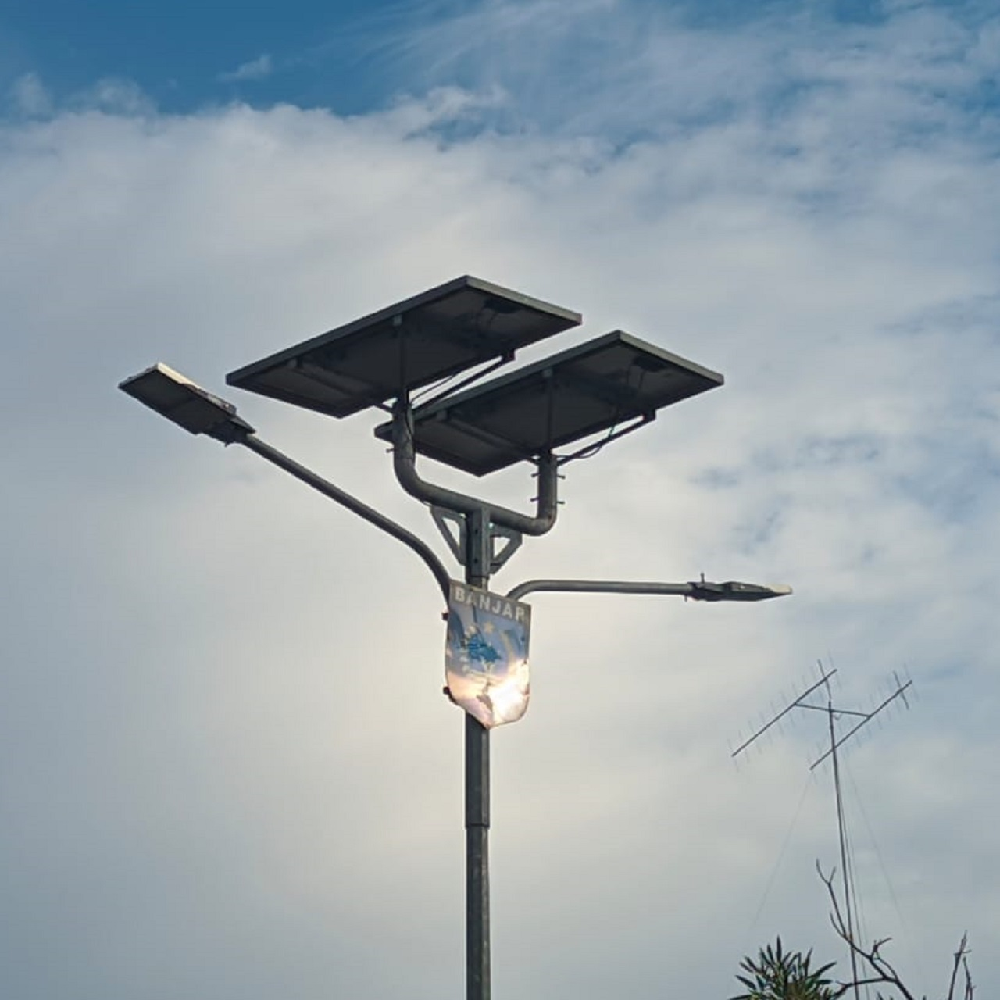
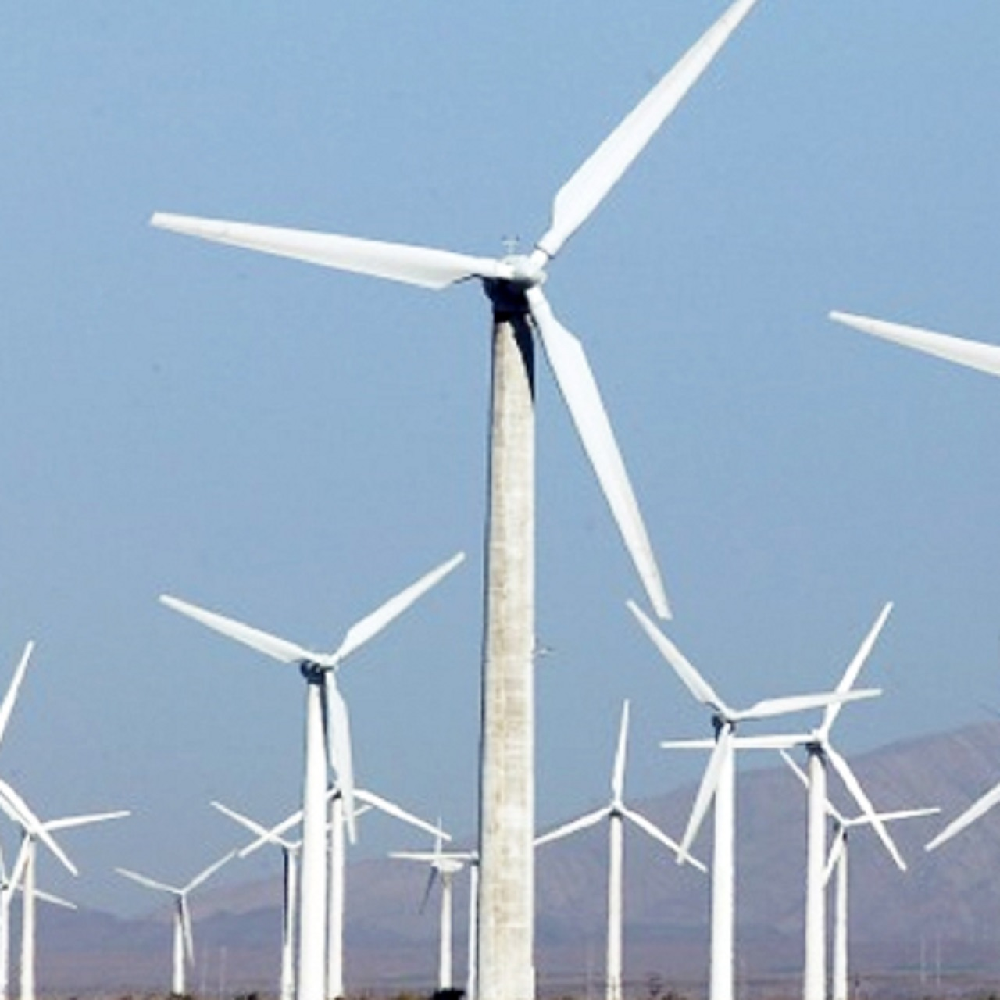
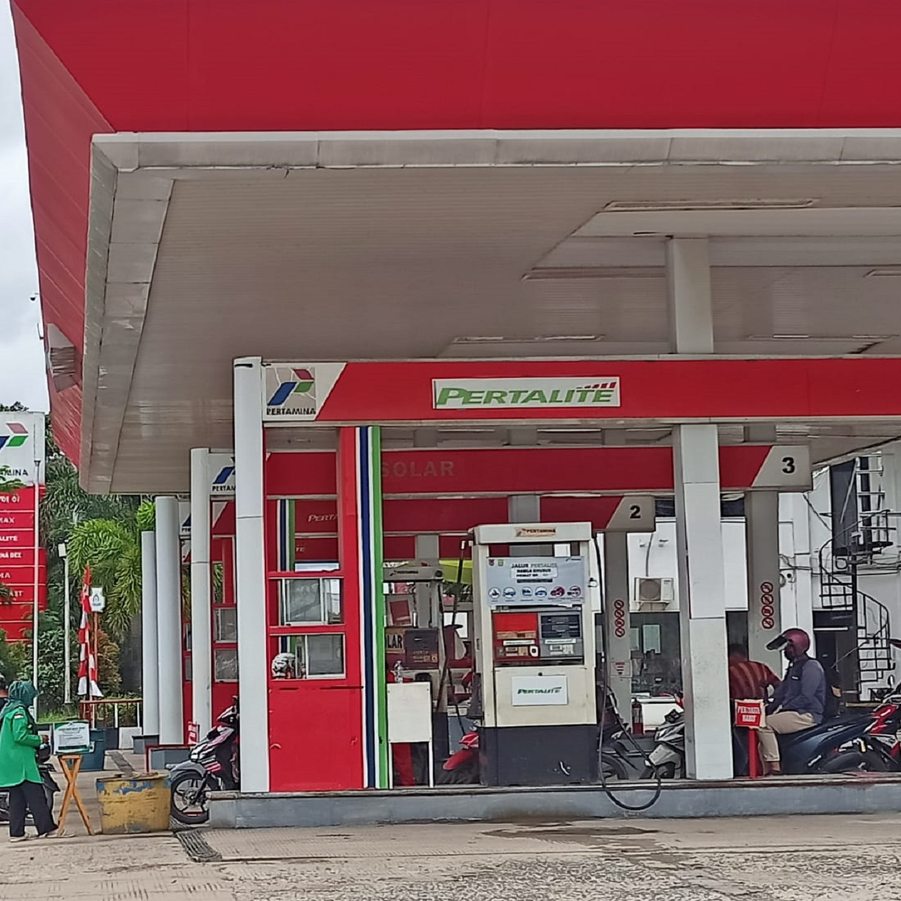

Mari Mencoba
Setelah membaca materi mengenai sumber energi, jawablah latihan berikut ini untuk menguji pemahamanmu.
Petunjuk :
- Golongkan sumber energi di bawah ini, apakah termasuk sumber energi terbarukan atau tak terbarukan
- Tekan tombol cek untuk melihat hasil jawaban. Kolom pada tabel akan berwarna hijau jika jawaban benar dan berwarna merah ketika jawaban salah.
| No. | Gambar | Jenis |
|---|---|---|
| 1. |  |
|
| 2. |  |
|
| 3. |  |
|
| 4. |  |
|

Kesimpulan
- Sumber energi adalah segala sesuatu yang menghasilkan energi yang terbagi menjadi sumber energi tidak terbarukan dan sumber energi yang terbarukan.
- Sumber energi yang tidak terbarukan merupakan sumber energi yang ketersediaannya terbatas dan sulit untuk diadakan kembali. Sumber energi yang tidak terbarukan di antaranya energi hasil tambang bumi dan energi nuklir.
- Sumber energi yang terbarukan adalah sumber energi yang dapat digunakan terus-menerus karena ketersediaannya dapat diusahakan kembali. Sumber energi yang terbarukan di antaranya matahari, air, angin, tidal, biomassa dan hidrogen